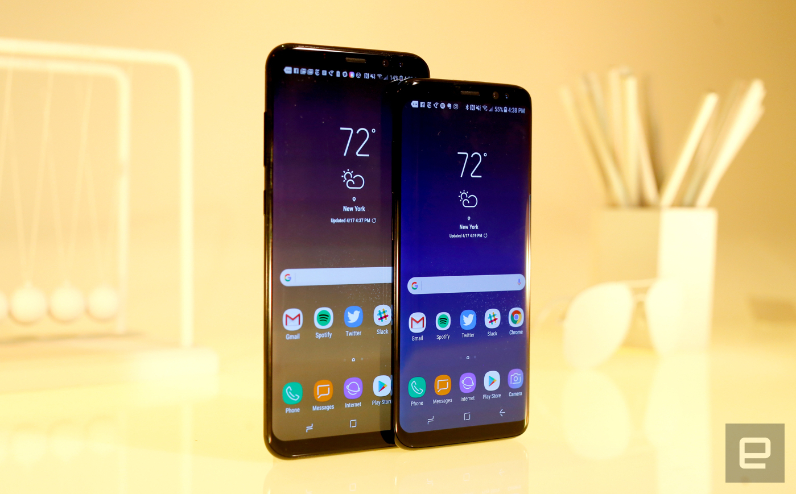
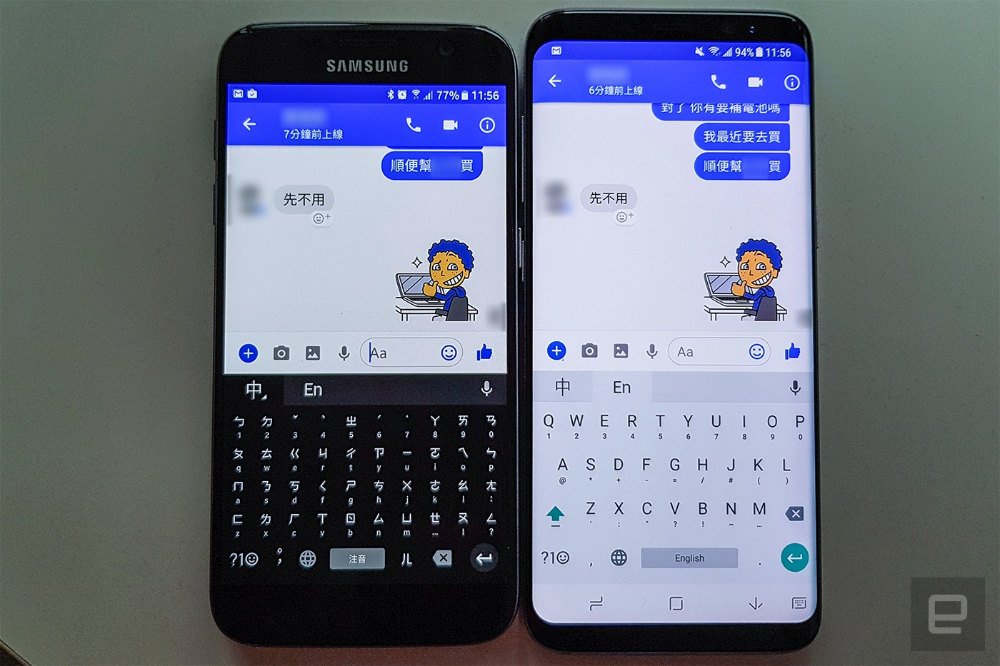
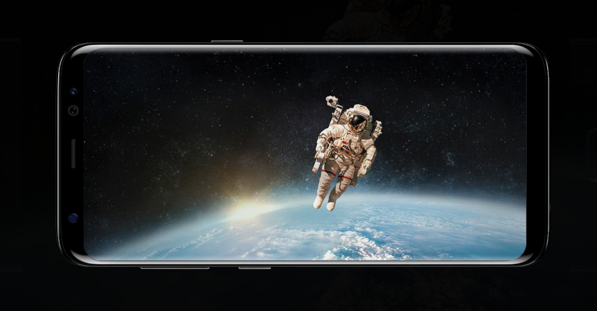
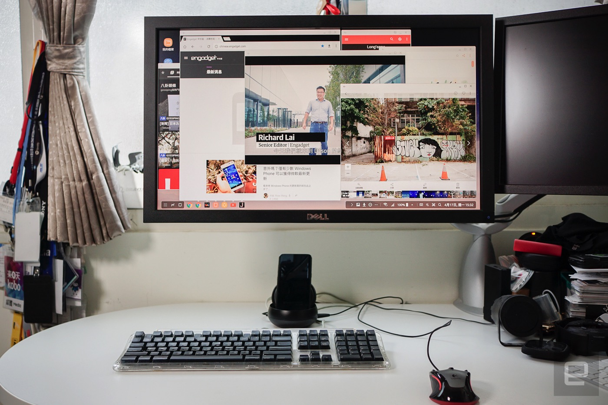
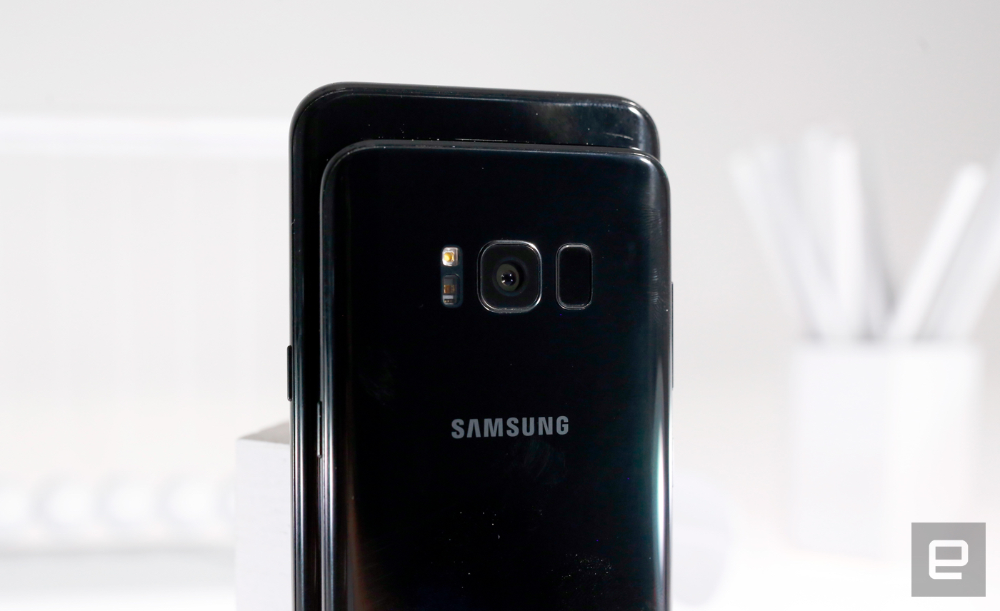
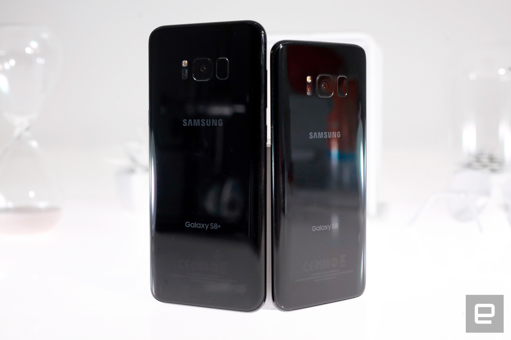

重点规格
硬件设计
S8 与 S8+ 的设计语言很好理解，但却很难用相机拍出它的美。
基本上它就是一支拿掉了笔、并且将手机与屏幕都变得更高、
占比变得超猛的 Note 7（谜之声：额... 说好不提的）。
手机侧面采用平整融入边框曲线的曲面屏幕玻璃，并且将中框改为亮面漆面覆盖，
让整体手感获得了更进一步提升。
在高屏幕占比 + 机身变长的变化下所得到的好处，
是在与前代接近的宽度下可获得更大（其实是高）的屏幕范围。
S8 与 S8+ 分别在保持差不多的尺寸的同时，
都由前代的 5.1 吋与 5.5 吋 S-AMOLED
增大来到了 5.8 吋与 6.2 吋。原本一直以来在小尺寸屏幕上没见到曲面屏幕，
也加入了 S8 ，让全系列产品都拥有这样的规格。

这样 18.5:9 高屏幕占比的规格 LG G6 也不是没有提前端出来，
不过通过前后曲面玻璃漂亮的收边，说真的，S8 与 S8+
真的是会让人一拿 / 一看就上瘾的手机。
小编直接拿 S8 与 S7 对照比较时，发现单从视频观赏时的情境而言，
S8 在看 16:9 视频的时候并没有多大的优势。

从上图可以看出，在观看这种 16:9 视频时，S8 的左右还是有着相当大的黑边。
整体面积虽然有大一些，但跟 S7 没有太大的差异。此时虽然原厂会主动跳出裁切至全屏幕的选项，
但视频上下就会被切到了（点我看范例截图，下方字幕都被裁到了啊）。
加上 S8 还是没有提供立体双喇叭的规格，所以单就个人的感觉，
是认为 S8 的观赏视频体验还是有改进之处。不过看更宽比例的视频爽度就会直线上升了就是了。
不过，一旦放直，S8 的「视界」就跟 S7 拉开距离了 -- 虽然很想讲「大大地」拉开距离，
不过就我们的比较之下，由于底部始终还是得要放着系统按钮海苔条的关系，所以以聊天功能来讲，
大概就是增高了一两行字这样的高度而已（当然，如果能让系统进入沉浸模式就能更为拉大，
但基本上键盘一弹出来就一定会有系统按钮）。手感部分，因为手机主要只是变长了，
所以两者单手操控的手感都与前代接近。S8+ 基本上误触的机会已经很少了，
改了曲面屏幕的 S8 更是好操控。
屏幕
虽然传出了偏红的问题，但这次 S8 与 S8+ 依旧保持着相当赞的显示表现。
他们的 Super AMOLED 在进入了 18.5:9 比例世代之后，
无论在色彩表现与动态范围上（毕竟有 HDR 认证）都十分优秀。
配合内建的影像增强功能，更是可以让视频的播放表现更为讨喜。
如同前面硬件篇所提到的，这个三星称之为无边际屏幕的 18.5:9 屏幕，
在播放大多 16:9 的视频之下左右会显示黑边，甚至用 YouTube app 看视频的时候，
还发现软件浮水印会被压在黑边之上，感觉有点有趣 -- 这里有个好处是 FB Messenger
的聊天大头视窗收起时，其实是刚好收在黑边的，就反而不会遮到屏幕。

无论是 S8 或是 S8+，这次的屏幕最高分辨率皆为 2,960 x 1,440，
不过三星在预设值之下都会将其调整至 Full HD+ 的 2,220 x 1,080。
所以如果想要享有最高画质，则是必须进入显示选项中将分辨率拉到最高。
当然，如果你很想省电的话，也是可以降到最低的 HD+ 啰，
不过个人认为这样的调整对续航的帮助并没有太大。
加上除了原厂的闪电快充之外，S8 也都还是具备无线充电的规格，
「补血」手段还算多啦，所以倒不如多多享受它所能给你的旗舰级观赏享受比较实在些。
DeX 工作站
这次的评测中我们也花了几天的时间试用了 DeX 移动工作站。先讲结论，
假若小编真的入手了 S8，真的会把这配件列入必买的购物清单之中。
它，设置起来相当简单，基本上就是线插一插就可以运作了。
唯一比较麻烦之处，是它必须使用原厂的 USB 快充才可以驱动
（Note 4 用的，最高 9V / 2A）。小编试着用一般的充电器或移动电源来供电，
基本上手机插上去是连充电都不显示的，更别说是启动屏幕来显示了。

在 DeX 插上 S8 之后，首次使用的话系统会询问你是要做 DeX 的工作站，
亦或是单纯镜射使用。这里我们当然是希望能进入 DeX 来试试它的表现啰！
说真的，一切的体验就跟我们记者会所感受到的差不多，
基本上支持 DeX 的 App 如 Chrome 与 Samsung Notes 等，
都能提供可全屏幕或放大缩小屏幕的使用方式（甚至 Chrome 还可以开启多视窗）。
但也有满多一般 App 是仅能用手机的长方尺寸开启，并且仅能调整横向或直向而已。
相机
S8 与 S7 系列的主相机都还是采用了 12MP 的感光元件，
规格与实际上的差异并不很大，但在现有手机厂牌中都算数一数二厉害了。
都能提供相当棒的对焦（毕竟是 Dual Pixel 对焦系统啊！）
与色彩表现，并且搭载了在录影与拍照都有很好表现的光学防抖系统。

三星有特别强调这次 S8 在低光时的多影像叠合功能可以增进拍摄的效果，
而就我们实际拍摄的感想是觉得，在配合 1.4µm 感光元件与 f/1.7 光圈之下，
S8 已经比一般相机要能捕捉到更多细节了，加上叠合之后在低光环境下的确算可圈可点。
前置相机的部分，这次 S8 搭载了广角 f/1.7 的镜头，
亦提供了很有意思的 AR 自拍道具效果。
性能续航
简而言之，无论是高通或是 Exynos 8895 的版本
（看起来这次 S835 也很不错？）的 S8 与 S8 Plus 都缴出了相当高规的跑分成绩。
重点是，这还是在皇帝版尚未登场的状态之下，
以 4GB RAM 的一般版本所跑出的成绩（
日后如果有机会使用到 6GB RAM 版本再来比较试试）。
基本上这样的表现要拿来玩一些 3D 游戏都不是什么问题的啦。

更惊人的是，S8 与 S8+ 的电量并没有屏幕变大，加上电池容量持平甚至小减而退步，
而且是 S835 跟 Exynos 8895 的版本都基本一致。
3,000mAh 的 S8 的高通版本缴出了 13 小时又 27 分、Exynos
版则为 14 小时又 3 分；电量降到 3,500mAh 的 S8+
则为 15 小时又 8 分（S835）与 14 小时 54 分（Exynos 8895）。
喔对了，这个成绩是跟主站编辑的综合测试整理，交代一下我们这边（Exynos 8895 版）的测试基准。
首先，一开始我们就把系统调整到最高分辨率，
视频测试的时候也将视频占满整个屏幕，
所以应该算是比较严苛一点的测试条件 。
从标准续航测试中，可以看出这次三星总算将双版本的能耗调整的较为接近了，
跟其他对手包括 Pixel XL 与 Moto Z Force 相比也还是胜出；
跟 Note 7 比则是夹在双版本之间差距没有很大（Note 7 的 Exynos 8890 续航算是障壁啊！）
整体来讲，无论是什么版本的 S8 或 S8+，
性能都是当今高标了，所以如果你是对于手机性能非常讲究的人，
它应该不会让你失望啰。而且其实在运行了很多跑分软件之后，
S8 的机身并不会有特别烫手的感觉，这点十分不错。
总结
从这次的 S8 与 S8+，感觉出来三星是希望离「当红炸子鸡」的红与炸两个字越远越好。
也因此，虽然我们一方面可以感受到这次旗舰机的各种进步，
但又同时能深刻体会他们的确也是步步为营小心谨慎。所以即便搭载了这么抢眼的屏幕，
但大多设计上还是走着 Note 7 承袭而来的基础，并没有做出太大的改变，
也不断通过前期针对安全的宣传来希望脱离前阵子的阴霾。
事实上，虽然这一年还很久，不过就我们目前所见，
只要没有太大意外发生的话（你懂的），
这次的 S8 与 S8+ 无庸置疑将会是最近最值得购买的旗舰机之一。
好机无庸置疑，但，接下来就是靠时间对品质的验证了。
评论